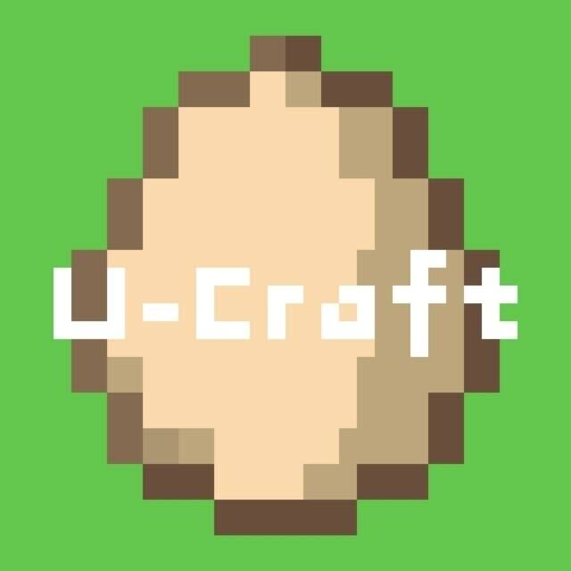

How to Join?
It is simple! Read our server regulations, download the compatible client, and you are ready to play.
Download the client →Minecraft Bedrock Edition Server
Survival, Technical Minecraft, Mini-games and more — we would love to have you join us!
📱 Tip: open this site in your mobile browser to add the server directly

We have been running this Minecraft server stably for over 5 years, currently split into Survival Realm 1 & 2 and a dedicated Mini-games server.
Powered by an Intel i7-14700K, we aim to give every player a stable, smooth experience.
From your first login to long-term adventures, we make it easy to get started
It is simple! Read our server regulations, download the compatible client, and you are ready to play.
Download the client →Our detailed rules and guidelines are documented in full — please read them before you jump in.
Read the rules →Powered by an Intel i7-14700K for long-term stability and a lag-free gaming experience.
Seasonal events, building contests… and plenty of surprises still waiting to be discovered!
Open this site in your mobile browser and add the server with a single tap to start your adventure.